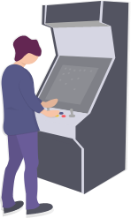
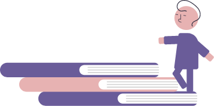

Relaxation Mode
rock paper scissors
Get ready for a vicious battle of rock paper scissors with your
pc!
Simply pick your hand, Rock, Paper or Scissors and you'll what the
mighty PC has picked.
If you're not aware of what tramps what, refer to the table below!
| Player 1 | PC Player | Winner |
|---|---|---|
| Rock | Paper | Paper |
| Paper | Scissors | Scissors |
| Scissors | Rock | Rock |
If both of you play the same hand, it's a tie! Now go ahead and start playing!
PC
0
YOU
0
PC PLAYED: R/P/S
YOU PLAYED: R/P/S
🏆
X WINS
cat jump
WATCH OUT! Don't trip over those trash cans!
You don't want your cat coming home smelling gross.
Let's see how far you can get along by pressing space to jump and
set a new personal best! Press SPACEBAR to start!
HIGHSCORE
0
SCORE: 0
minesweeper
Click away on the boxes, but step carefully, you might run into a
💣!
LEFT CLICK to reveal whats underneath.
RIGHT CLICK to put a flag where you think the bombs are.
HIGHSCORE
0
Focus Mode
to-do list
Let's get things sorted! List all the tasks you need to do and
cross them off as you finish them!
- Add CSS
- Add JS
- Clean up
pomodoro
A pomodoro timer is used to do work and take breaks in a way that
helps keep you motivated.
The most common interval is 25 minutes of work followed by a 5
minute break.
Afer completing 4 sessions of work, you take a 25 minute break and
then repeat the whole process.
Feel free to change the intervals using the settings button below.
Let's get working!
25:00
| FOCUS PERIOD | 25 min |
| SHORT BREAK | 05 min |
| LONG BREAK | 25 min |
| SESSION | 1/4 |
date coutdown
Looking forward to a moment? Let's coutdown to it together!
Change of mind? Just click the settings icon and set a new date!
countdown to...